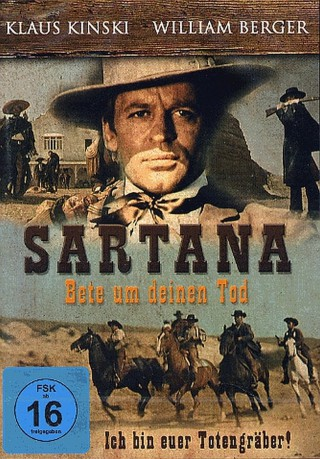

#8165 Sartana - Bete um deinen Tod
Alternativ: If You Meet Sartana Pray for Your Death (Englischer Titel)
 
 IMDB-Wertung: 6.5 / 10
IMDB-Wertung: 6.5 / 10  Metascore: 0
Metascore: 0 
Zwei betrügerische Bankiers einer kleinen Stadt des Wilden Westens organisieren einen ausgeklügelten Plan, um sich des Goldes einer Postkutsche zu bemächtigen. Aber das Projekt erfordert den Einsatz zahlreicher Häscher. Das Gold nämlich tötet jeden, der seiner zu bemächtigen versucht. Die Aufgabe, jeden Angreifer zur Strecke zu bringen, hat ein ebenso unerbittlicher wie mysteriöser Pistolenschütze: Sartana, der Mann mit dem rätselhaften Ausdruck.
Jahr: 1968
Dauer: 95 Minuten
FSK: 18
Land: Italien Studio: Nora-FilmverleihTonspuren:
Untertitel:
Auflösung: 1080p (1920x1040) Größe: 6717 MB
Genre: Western
Regisseur: Gianfranco Parolini
Drehbuch: Luigi De Santis
Soundtrack: Piero Piccioni
Darsteller:
Datei: X:\FSK18-Western\Sartana - Bete um deinen Tod (1968, FSK18, 1920x1040).mkv seit 02.02.2018
Festplatte: FSK18
 Es gibt insgesamt 25 Filme in der Gruppe 'FSK18-Western'
Es gibt insgesamt 25 Filme in der Gruppe 'FSK18-Western'